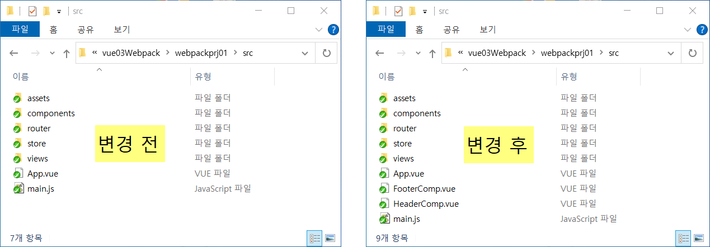

Vue에서의 Webpack 실습을 위해서는 Vue-CLI 를 사용해야 한다.
# CLI 는 command line interface의 약자.
step 1. node / npm 버전 업그레이드
$ node -v # node 버전 확인
v16.18.1
$ npm -v # npm 버전 확인
9.3.0
$ npm install -g npm@latest # npm 최신 버전 설치. -g: 전역 설치
$ npm -v # npm 버전 확인
9.3.0
$ npx -v # npx(=npm extension) 버전 확인
9.3.0
step 2. Vue-CLI 설치
$ vue -V # 설치된 vue/cli 의 버전 확인
bash: vue: command not found
# vue/cli 를 전역(--global)으로 설치한다. -g: 전역 설치
# * cli: command line interface 의 약자
$ npm install --global @vue/cli
$ vue -V # 설치된 vue/cli 의 버전 확인
@vue/cli 5.0.8
step 3. Vue 프로젝트 생성
$ vue create webpackprj01 # webpackprj01 은 만들고자 하는 프로젝트명 입니다.
Vue CLI
** 선택에 주의 하세요
? Please pick a preset: (Use arrow keys)
Default ([Vue 3] babel, eslint)
Default ([Vue 2] babel, eslint)
> Manually select features
** 선택에 주의 하세요
? Check the features needed for your project:
(*) Choose Vue version
(*) Babel
( ) TypeScript
( ) Progressive Web App (PWA) Support
(*) Router
(*) Vuex
( ) CSS Pre-processors
(*) Linter / Formatter
( ) Unit Testing
( ) E2E Testing
? Choose a version of Vue.js that you want to start the project with (Use arrow keys)
> 3.x
2.x
? Use history mode for router? (Requires proper server setup for index fallback in production) (Y/n) Yes
** 선택에 주의 하세요
? Pick a linter / formatter config:
ESLint with error prevention only
ESLint + Airbnb config
ESLint + Standard config
> ESLint + Prettier
** 선택에 주의 하세요
? Pick additional lint features:
> (*) Lint on save
(*) Lint and fix on commit
? Where do you prefer placing config for Babel, ESLint, etc.? (Use arrow keys)
> In dedicated config files
In package.json
? Save this as a preset for future projects? (y/N) N
...(중략)
$ cd webpackprj01
$ npm run serve
$ ls # 현재 폴더 파일 목록 출력
App.vue fileload.png footer.html Footer.vue header.html Header.vue
vue03-01.웹팩이해하기.html vue03-03.파일합치기.jquery.html vue03-05.파일합치기.Vue.html
webpackprj01/
step 4. webpackprj01 폴더 이동
$ cd webpackprj01
$ pwd # 현재 폴더 위치 확인
/c/TIS/LectureMaterial/Vuejs/vue03Webpack/webpackprj01
$ ls # 현재 폴더 파일 목록 출력. package.json 이 있는지 확인
babel.config.js node_modules/ package.json package-lock.json public/ README.md src/
step 5. Vue 프로젝트 서버 실행
$ npm run serve
step 6. .prettierrc.js 파일을 프로젝트 루트에 복사
반드시 윈도우 탐색기에서 .prettierrc.js 파일을 복사하여
webpackprj01/ 폴더에 붙여넣으시오.
주의사항) visual studio code 에서 붙여넣기 하면 안됨.
step 7. 실습 파일 복사
반드시 윈도우 탐색기에서 HeaderComp.vue, FooterComp.vue, App.vue 파일을 복사하여
webpackprj01/src/ 폴더에 붙여넣으시오.
주의사항) visual studio code 에서 붙여넣기 하면 안됨.

step 8. 소스 전체에 eslint 규칙에 맞게 포맷팅 변경하기
정의한 ESLint 룰을 지키고 있지 않은 파일과 내용을 확인하고
prettier 의 룰에 맞게 코드를 수정 할 수 있습니다.
$ npx prettier --check ./src # ESLint 룰 체크
$ npx prettier --write ./src # ESLint 룰에 맞게 코드 수정
step 9. 터미널에서 실행중인 프로세스 종료
"ctrl + c" 누르면 프로세스 종료 됨
step 10. Vue 프로젝트 서버 재 실행
$ npm run serve
step 11. 운영 서버에 배포할 파일을 만든다. <== 웹팩 사용
$ ls # dist 폴더가 있는지 확인
babel.config.js node_modules/ package.json package-lock.json public/ README.md src/
$ npm run build # webpackprj01/dist/ 에 합쳐진 파일이 생성됨